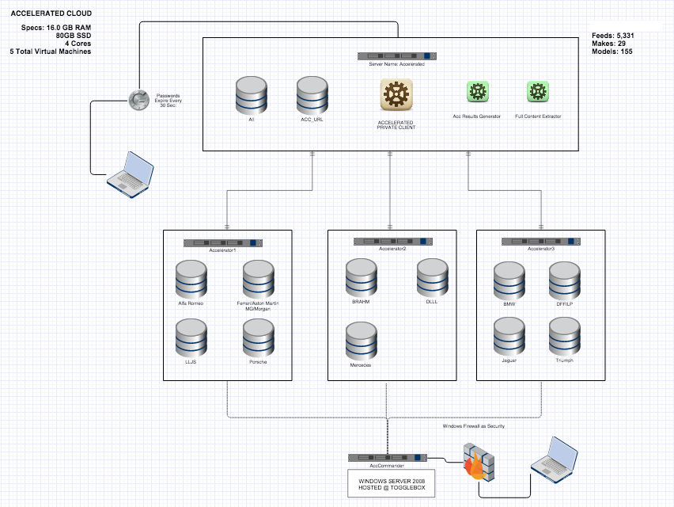
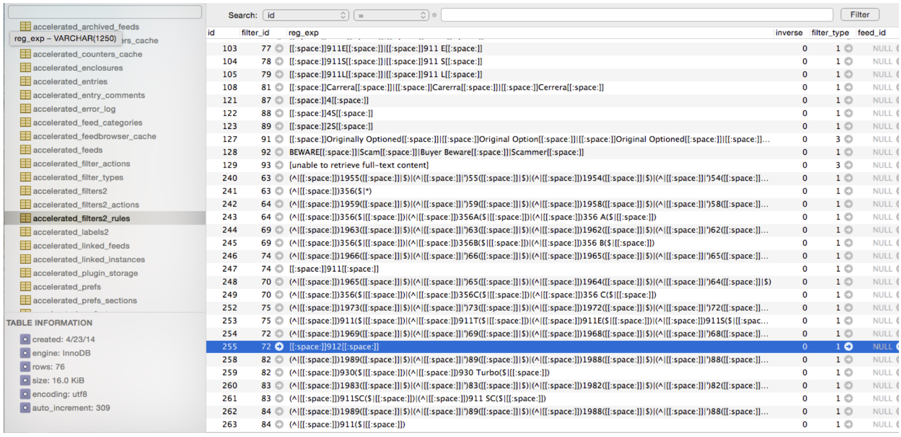
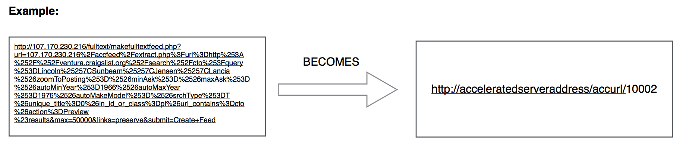

Primary Technologies Used

Tiny Tiny RSS
Google Authenticator
Accelerated was a dream project. I worked with a boutique car dealership who specialized primarily in 60s and 70s European Classics. I was brought in to solution and attempt to automate what was previously a 4-6 hour daily manual search, and Accelerated did that and far more. In addition, we added filters and categorization of vehicles so it was easier to target vehicles of interest and review previous ads. Many ads expire, and the comps are lost, but in our system we had historical records of advertised vehicles for them to compare to. Additional abilities to report on these vehicles and find historical pricing information proved invaluable in investment decisions. Overall, it provided ultimate power into their hands and an edge on finding vehicles within 5 minutes of them being advertised.
There are many components to this app. The overall cloud consisted of 5 virtual servers, 3 dedicated to managing the 5300+ feeds that were searched within every 5 minutes. Problems occurred after about a years use with Craigslist, as they officially detected and banned the DigitalOcean Servers from retrieving feeds, NY, LA, all of themt. Did I do that :) ? I worked with Feedly, one of the largest RSS apps known, and even they couldn't negotiate with Craigslist to allow feed fetching on short intervals.

This is all work done to filter down the Make/Model/Year Range into the proper bucket. The filter engine utilizes REGEXP (Regular Expression) strings to analyze the three identifying components of the vehicle ad to determine what vehicle it is.

This component of the Accelerated Framework stores all web addresses of the specific search queries across the Accelerated Source Repository. For purposes of organization and maintenance, it also contains a URL Shortening tool to take extremely long search queries and shorten them to an Accelerated Lookup Code (ALC).
